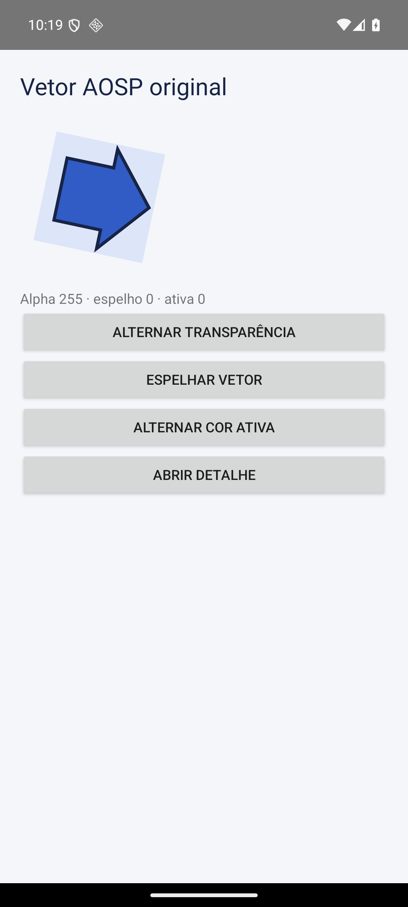
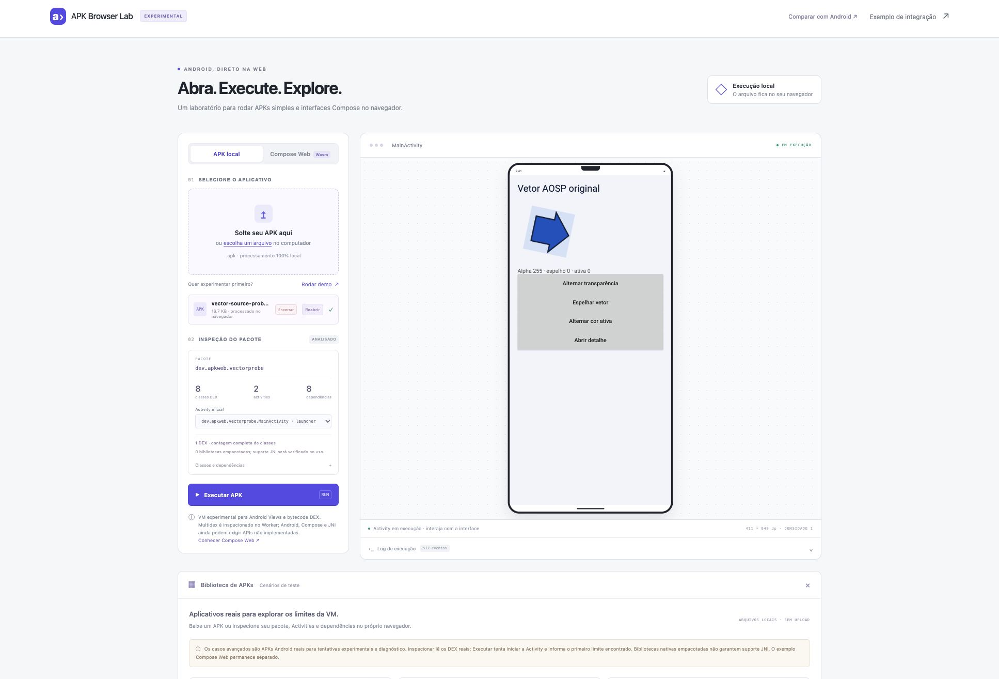
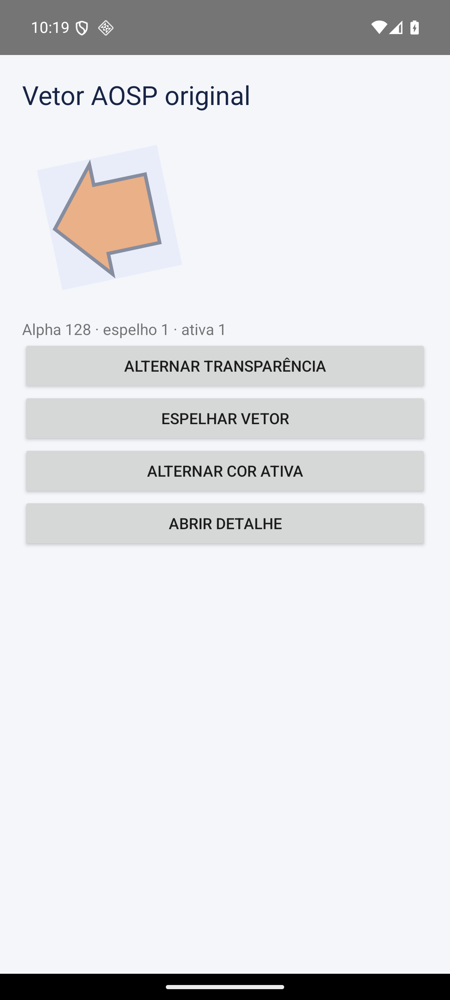
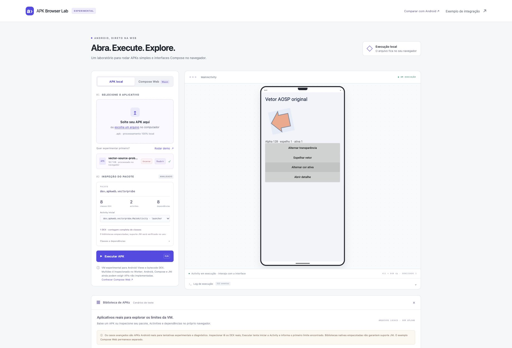

O mesmo vetor, nos dois ambientes.
VectorDrawable, ColorStateList e LayoutInflater originais do AOSP, com desenho pelo Skia WebAssembly.
1. Estado inicial
Grupo rotacionado, recorte vetorial, preenchimento e contorno.




2. Transparência, espelho e cor ativa
Alpha 128, direção RTL e ColorStateList laranja. Cliques executam o DEX do APK.




Fluxo exercitado: mudar transparência → espelhar → ativar cor → abrir a segunda Activity → voltar mantendo o estado.
Android: 33 verificações, incluindo os pixels do vetor nas duas Activities. Web: fluxo realizado no navegador integrado e teste da VM com os mesmos bytes do APK. O pixel central do vetor no detalhe web também coincidiu com o Android após compor a transparência. A adaptação de Views ainda tem diferenças visíveis de fontes, métricas e tema; não há afirmação de igualdade pixel a pixel.
As imagens são capturas reais, apenas enquadradas por CSS. O emulador foi usado para QA de desenvolvimento. A execução web não depende dele e não exige instalação.